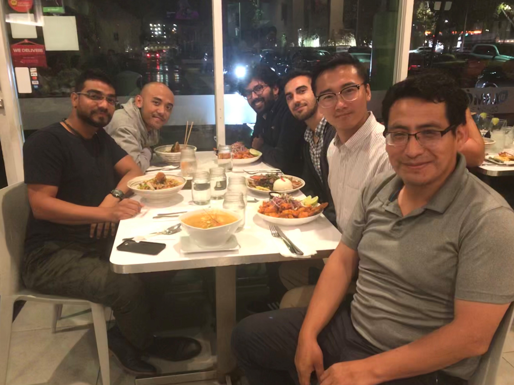

Our Team
Principal Investigator

Arturo S. Leon, Ph.D., P.E., D.WRE
Associate Professor of Hydraulic Engineering
Postdoc, Univ. of Illinois at Urbana-Champaign, 2007-2010
PhD, Civil Engrg, Univ. of Illinois, Urbana-Champaign, 2007
MS, Hydraulic Engrg, National Univ. of Engrg, Peru, 2000
BS, Civil Engrg, Nat. Univ. San Cristobal Huam., Peru, 1996
Post-docs
Linlong Bian
Courtesy Postdoctoral Associate
PhD, Civil & Env. Engrg , Florida Int. Univ., Miami, 2021
MS, Hydroinf. and Water Manag., U. of Nice Sophia, France, 2017
MS, Hydroinf. and Water Manag., Newcastle Univ., England, 2017
ME, Hydrol. and Hydr. Struct. Engrg., North China Univ., China, 2016
BS, Hydr. & Hydroel. Engrg, Nanchang Inst. of Tech., China, 2014
Sumit Zanje
Courtesy Postdoctoral Associate
PhD, Civil & Env. Engrg , Florida Int. Univ., Miami, 2023
MS, Civil Engrg , Florida Int. Univ., Miami, 2021
MEng, Mechanical Engrg, Birla Inst. of Tech., Pilani, 2017
BS, Mechanical Engrg, Univ. of Mumbai, India, 2014
Zain Syed
PhD Student
PhD, Civil & Env. Engrg., Florida Int. Univ., Miami (ongoing)
MS, Water Engrg., Nat. Univ. of Sci. & Tech., Islamabad, 2022
BS, Civil Engrg., COMSAT Univ. Isb., Islamabad, 2018
Shiva Marapakala
PhD Student
PhD, Civil & Env. Engrg., Florida Int. Univ., Miami (ongoing)
MS, Mechanical Engrg., Cleveland State Univ., Ohio, 2023
BS, Mechanical Engrg., Manipal Acad. of Higher Educ., India, 2020
Rizwan Haider
PhD Student
PhD, Civil & Env. Engrg., Florida Int. Univ., Miami (ongoing)
MS, Port, Co. & Offsh. Eng., Dalian Univ. of Techn., China, 2022
BS, Civil Engrg., Bahauddin Zakariya Univ., Pakistan, 2017
Current Undergraduate Research Assistants
and Research Interns
- Hazem Aboukorin, MS (Spring 2024 – Present)
Former Graduate Students and Post-Docs
- Abbas Sharifi (Ph.D – Civil Engineering, graduated Spring 2025). Currently Lab Manager at the CEE Department, FIU.
- Zeda Yin (Ph.D – Civil Engineering, graduated Spring 2024). Currently a tenure-track Assistant Professor in Engineering and Environmental Sciences at the City University of New York, Staten Island.
- Vivek Verma (Courtesy Post-Doctoral Associate, Fall 2021 – Summer 2024). Currently a tenure-track Assistant Professor in India.
- Pratik Mahyawansi (Ph.D – Mechanical Engineering, graduated Spring 2024). Currently a Post-Doctoral Researcher at the University of Illinois, Chicago.
- William Campbell (M.S – Civil Engineering, graduated Summer 2023). Currently a Hydraulic Engineer at the U.S. Army Corps of Engineers, Jacksonville, Florida.
- Hector Mayorga (M.S – Civil Engineering, graduated Summer 2023). Currently a tenure-track Assistant Professor in Nicaragua.
- Sumit Zanje (Ph.D – Civil Engineering, graduated Spring 2023). Currently a CFD Modeling Engineer at VPS Development Partners LLC.
- Linlong Bian (Ph.D – Civil Engineering, graduated Fall 2021). Currently a Water Resources Engineer at Black & Veatch.
- Vivek Verma (Ph.D – Civil Engineering, graduated Summer 2021). Currently a tenure-track Assistant Professor in India.
- Mohammad Reza Safaei (Post-Doctoral Research Associate / Research Assistant Professor, 2018–2021). Currently a Senior Advanced Project Engineer at Honeywell Aerospace Technologies, Tampa, FL.
- Dogukan Ozecik (M.S – Civil Engineering, graduated Summer 2021). Currently a Hydraulic Engineer at the State Hydraulic Works, Ankara, Turkey.
- Sumit Zanje (M.S – Civil Engineering, graduated Spring 2021). Currently a CFD Modeling Engineer at VPS Development Partners LLC.
- Salome Montoya (M.S – Civil Engineering, graduated 2020). Currently a Project Manager (Civil Engineer) at EXP, Brampton, Ontario, Canada.
- Li Qin (Ph.D – Visiting Scholar, graduated Fall 2018). Currently an Assistant Professor at Zhejiang Ocean University, China.
- Ahmet Emirhan Yolcu (M.S – Civil Engineering, graduated Spring 2018). Currently a Hydraulic Engineer at the State Hydraulic Works, Ankara, Turkey.
- Yunji Choi (Ph.D – Civil Engineering, graduated Spring 2018). Currently at Jacobs Engineering Group, Corvallis, OR.
- Taher Chegini (Ph.D Student – Civil Engineering, 2017–2018). Currently a Post-Doctoral Researcher at Purdue University, Indiana.
- Hamid Bashiri (Post-Doctoral Research Associate, 2017–2018).
- Erfaneh Sharifi (Ph.D Student – Civil Engineering, 2017–2018).
- Duan Chen (Post-Doctoral Research Associate, 2014–2016). Currently Professor of Water Resources at Changjiang River Scientific Research Institute, Ministry of Water Resources, China.
- Parnian Hosseini (Ph.D – Civil Engineering, graduated Fall 2016). Currently a Water Resources Engineer at Golder Associates, Calgary, Canada.
- Yun Tang (M.Eng – Civil Engineering, graduated Summer 2016). Currently at HDR Engineering, Washington, D.C.
- Ibrahem Elayeb (M.S – Civil Engineering, graduated Summer 2016). Currently a Designer at Precision Structural Engineering, Inc., Klamath Falls, Oregon.
- Julia Rask (M.S Student – Water Resources Engineering, 2012–2016).
- Ali Alnahit (M.S – Civil Engineering, graduated Summer 2015). Currently a Ph.D Student at Clemson University.
- Christopher Ryan Hockert (M.Eng – Civil Engineering, graduated Spring 2015). Currently an Engineer at SSOE Group, Beaverton, Oregon.
- Benjamin Church (M.Eng – Civil Engineering, graduated Spring 2014).
- Christopher Gifford-Miears (M.S – Civil Engineering, graduated Winter 2014). Currently a Hydraulic Engineer at Montgomery Watson Harza (MWH) – Denver.
- Elizabeth A. Kanashiro (M.S – Civil Engineering, graduated Winter 2013). Currently a Hydrologic/Hydraulic Engineer at Ausenco (Australian Consulting Company).
Former Undergraduate Research Assistants
and Research Interns
- Hazem Aboukorin, MS, (Spring 2024 – Fall 2025)
- Fabio Di Persio, BS (Hons), (Fall 2024)
- Dhruv Anand, MS, (Spring 2024 – Summer 2024)
- Kalev Lemus, BS, (Fall 2022 - Fall 2023)
- Matias Rodas, BS, (Summer 2023)
- Lucas Hurley, BS, (Miami-Dade College, Summer 2023)
- Jesus Galarza, BS, (Miami-Dade College, Summer 2023)
- Antonio Herreros De Tejada, BS, (Miami-Dade College, Summer 2022)
- Kianna Desilva, BS, (Miami-Dade College, Summer 2022)
- Roberto Zotti, BS, (Spring 2022 - Summer 2022)
- Carlos Amezquita, BS, (Summer 2021)
- Carla Barrionuevo, BS, (Summer 2020)
- Nicole Romanach, BS, (Spring 2020 – Spring 2021)
- Angeluz Kobrosly, BS, (Spring 2020 – Spring 2021))
- Sabrina Hochberg, BS, (Spring 2020 – Spring 2021)
- Francisca Olmos de Aguilera, BS, (Spring 2020 – Spring 2021)
- Salome Montoya, BS, (Fall 2018 – Fall 2020)
- Daniel Viciana, BS, (Fall 2019 – Fall 2020)
- Angela Hogan, Honors College student, BS, (Fall 2018 - Spring 2019), 2nd place winner of 2018 EPA Campus RainWorks Challenge, Master Plan Category. Currently at BCC Engineering, Miami, FL.
- Davis Isaias Hernandez-Alvarez (Winter 2016)
- Tyler Oathes (Winter-Spring 2016 )
- Megan Conley (Winter-Spring 2016 )
- Alyssa Saito (Winter-Spring 2016 )
- Emily Napualani Luke (Winter-Spring 2016 )
- Devin Robert Sene (Winter-Spring 2016 )
- Parker Wood Murphy (Winter-Spring 2016 )
- Lee Brian Bissinger (Summer 2011, Fall 2012, Summer 2012, Spring 2014)
- Tim Lloyd (BS - Civil Engineering)
- Emiko Fukuchi (BS - Environmental Engineering)
- Jeffrey Knowles (BS - Civil Engineering, 2011)
- Yunji Choi (BS - Civil Engineering, 2011)
- Hadi Mirsadeghi (B.S. Civil Engineering, 2010)
- Esther Contreras (BS - Civil Engineering, 2010)
Collaborators
- Prof. Mohamed Ghidaoui (Hong Kong University of Science and Technology, China)
- Prof. Ryan Lowe (The University of Western Australia, Australia)
- Prof. Nigel Wright (University of Leeds, United Kingdom)
- Prof. Bas Jonkman (Delft University of Technology, Netherlands)
- Dr. Martin Rüdisüli, Hunziker Betatech AG, Switzerland
- Tony Margevicius, URS, New Zealand
- Prof. Marcelo Garcia (University of Illinois at Urbana-Champaign)
- Prof. James Guo (University of Colorado at Denver)
- Prof. Leonardo Nania (Universidad de Granada, Spain)
- Prof. Venkataramana Sridhar (Virginia Tech)
- Prof. Peter Goodwin (University of Idaho)
- Prof. Arthur R. Schmidt (University of Illinois at Urbana-Champaign)
- Prof. Xiaofeng Liu (Pennsylvania State University)
- Prof. Ximing Cai (University of Illinois at Urbana-Champaign)
- Dr. Juan A. Gonzalez-Castro (South Florida Water Management District, Florida)
- Prof. Jose G. Vasconcelos (Auburn University, Alabama)
- Prof. Christopher Hoyle (Oregon State University)
- Prof. Nathan Gibson (Oregon State University)
- Prof. Meghna Babbar-Sebens (Oregon State University)
- Prof. Tyler Radniecki (Oregon State University)
- Prof. Claudio Fuentes (Oregon State University)
- Prof. Yong Chen (Oregon State University)
- Prof. Clinton S. Willson (Louisiana State University)
- Dr. Wayne C. Huber (Geosyntec, Oregon State University)
- M.S. Carmen Bernedo, Montgomery Watson and Harza, Colorado
- Dr. David H. Axworthy, http://www.nhcweb.com/, Pasadena, California
- M.S. Virgil Adderley, Bureau of Environmental Services, City of Portland, Oregon
- Sam Glovick, Wade Trim (http://www.wadetrim.com), Pittsburgh, Pennsylvania
Photos of the WISE Research Group
July 28, 2022. Picture of some of our group members. From left to right: Abbas, Hector, Arturo, Zeda, Pratik, Antonio and Linlong. Some members were nor present.

January 24, 2019. Picture of some of our group members. From left to right: Sumit, Aditia, Vivek, Dogukan, Linlong and Arturo.
April 05, 2019. Picture of some of our group members. From left to right: Linlong, Sumit, Aditia, Arturo, Dogukan, Vivek and Salome.
September 19, 2019. Picture of some of our group members. From left to right: Dogukan, Sumit, Arturo, Aditia, Reza, Linlong, and Vivek.
Website visitors since January 30, 2020
COPYRIGHT, ARTURO S. LEON